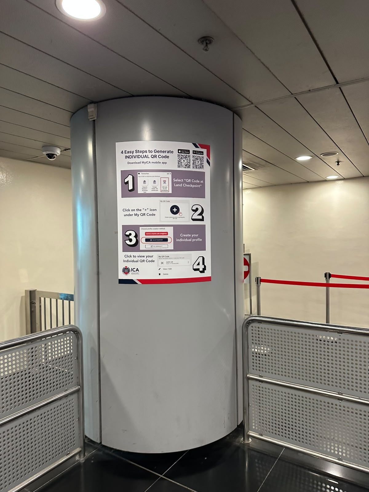

Cross-border user
Based mainly on one side; crosses for selected activities.
Hong Kong · Shenzhen · Singapore · Johor
A repair. A meal. A move. A connection.
Four overlapping arrangements reveal how people combine life across Hong Kong and Shenzhen.
12 sets of conversation and visit notes, with two separate expert discussions. An exploratory inquiry.
Meet the accountsWays to organise a cross-border life
These arrangements can overlap. The accounts below illustrate selected experiences; no commuter was interviewed for the worker-or-student example.
Based mainly on one side; crosses for selected activities.
Moves home from Hong Kong to Shenzhen.
Lives on one side and regularly works or studies on the other.
16,139 daily cross-boundary pupils · official evidence ↗Based in Hong Kong, with property, relationships or activities in Mainland China.
The school figure is for 2024/25; Mainland residence is not necessarily Shenzhen. It is not a worker count or an interviewed account.
The repair customer sought specialist parts in Shenzhen. The guide moved north. The professional works in Hong Kong and keeps ties in Shenzhen. The store manager crosses for meals and does most shopping in Hong Kong.
01 / The repair customer
Specialist parts and expertise for older equipment were the reason he described crossing.
One reported experience · paraphrased02 / The guide who moved north
She judged the combination to make guiding more workable. Her finances were not audited.
One reported experience · paraphrased03 / The professional with Shenzhen ties
She rents and works in Hong Kong. Property, family, friends and many activities remain in Shenzhen.
One reported experience · paraphrased04 / The Sheung Shui store manager
About monthly visits, mainly for meals; a Fanling home, work in Sheung Shui and most shopping in Hong Kong.
One reported experience · paraphrasedSelected accounts, not population categories. Buildings and connections are explanatory illustration; unknowns stay unplaced. About the research
This inquiry begins with Hong Kong–Shenzhen and returns to Singapore–Johor with questions to investigate locally.
01 / Livelihoods and choices
Specialist services, price and experiences attract people across. Time, convenience and crowding also shape what they choose.
The repair customer / reported motive
He sought specialist repairs for older equipment when suitable parts were difficult to find in Hong Kong.
AI-generated illustration of a capability question, not his equipment.CUHK research release · Figure 3 · 19 June 2025
Services made up 47% of recorded Mainland spending among seasoned AlipayHK users with Mainland transactions. In the separate Hong Kong panel, retail and food and beverages accounted for 58% and 29% respectively.
Share of recorded spending within each location. The release does not specify Figure 3’s observation window or establish identical membership in both panels.
Seasoned AlipayHK users are a selected group, not all residents or all spending. Mainland China is broader than Shenzhen. Different baskets do not establish displacement, causation or individual motives. Printed shares are rounded; Hong Kong categories sum to 101%.
CUHK release and Figure 3 ↗Read related studies ↗The expert said they would consider Shenzhen with childcare arranged and half a day available. Price and travel time were only part of what made a visit workable.
The dining visitors discussed choice, space and price, alongside buying online when neighbourhood shops did not stock what they needed.
The Sheung Shui resident crossed infrequently, describing crowding as a reason. The guide judged lower earnings alongside lower living costs and preferred work to be more workable.
Local business conditions
The Sheung Shui shop employee described mostly nearby residents. The store manager described both local and Mainland customers. Reported crowd changes need comparable footfall data.
Hong Kong retail-sales value changed by −7.3% in 2024 and +1.0% in 2025. These totals do not isolate the effect of Shenzhen.
Competitive pressures differ by purchase, customer and time.
Next · Services and navigation02 / Everyday services and navigation
Crossing, settling in and maintaining daily routines involve practical information and services people can find.

Immigration staff directed Jamie to the arrival-form kiosk.
Separate help points offered practical information on living, career, services, study and business.
Jamie observed phones and SIM cards, delivery services, a dental clinic and property agents. In Sheung Shui she saw driving-licence conversion assistance.
A property agent described restaurants catering to Hong Kong tastes and tuition for Hong Kong-curriculum students. The help centre described connecting visitors to relevant organisations; its operator was not confirmed and referrals were not tested.
Published programme evidence
A follow-up consultation pilot, medical records and return-referral arrangements offer a separate example. These measures describe different kinds of use.
More than 5,900 eligible HA patients had joined the follow-up consultation pilot by January 2026. Programme use does not establish outcomes.
Information and services offer starting points for unfamiliar arrangements.
Next · Relationships and support03 / Relationships and support
Moving home or working elsewhere need not replace existing relationships. People also find entry points into new circles.
| Account | Hong Kong | Shenzhen |
|---|---|---|
| The professional with Shenzhen ties | Residence and workEmployment and rented housing | Family and friendsProperty and many activities |
| The guide who moved north | Family visitsRelationships continue | Home and communityMany guiding friendships |
Paraphrases of two selected accounts. This comparison does not establish crossing frequency, prevalence or the strength of a relationship.
The guide’s account distinguishes hearing about an opportunity, qualifying and access to work. These are reported experiences, not a tested programme.
The guide · Shenzhen examples
Sports, interest groups and food-related activities; she considered Mandarin useful for joining local circles.
Dining visitors · Hong Kong examples
Sports leagues, coaching and volunteering. The discussion took place in Shenzhen, but these examples concerned Hong Kong.
Relationships can stay connected across cities while new circles form.
Next · Questions worth exploringQuestions worth exploring
These questions follow from the findings. They are directions for further inquiry, not findings of measured effects.
Follow products, customers and business models, alongside workers’ next jobs and earnings. Household gains and pressures can affect the same person.
Ask how providers identify needs, whether users get the help they seek, and where services can improve.
Explore how work, shared interests and friends help sustain ties and open new circles—and who lacks support.
Explore measurement questions ↗ Consider possible responses ↗
Next · Singapore–Johor Singapore–Johor visit · a direction toward Woodlands
Singapore–Johor visit · a direction toward WoodlandsSimilar journeys sit within different work, residence and service arrangements. Singapore–Johor needs its own evidence.
Locate the region and its plansA July 2026 association-commissioned RTS study forecasts additional consumer spending. Compare the gross flows and the net balance.
Forecast annual additional spending: Singapore consumers in JB, S$1.05 billion; JB consumers in Singapore, S$756 million. Source net: approximately S$290 million.
One practical possibility
An association-led visit could bring Singapore retailers and service businesses to Hong Kong and Shenzhen to discuss changing customers and offerings with operators. Promising ideas and difficult or unsuccessful adaptations would both be useful to examine for local relevance.
A proposed learning exchange, not an announced programme or evidence that an adaptation will transfer.
A conditional question · 2024 survey
≈ 1 in 3Around one in three Singapore respondents could envisage buying a Johor Bahru home and retiring there. What services and relationships would people need if more spent extended periods across the border?
Conditional interest among respondents, not observed moves or a share of all Singaporeans. Blackbox Research survey post ↗

Incoming customers matter alongside outgoing spending. Johor’s existing residents also face questions about businesses, work, housing and services.
The photograph shows instructions on display. It does not measure take-up, waiting times or outcomes.
Twelve sets of conversation and visit notes, with two separate expert discussions, help connect selected everyday experiences with larger questions. They do not measure the overall success of integration.
Read the documents, examine the evidence, or look closer at the fieldwork. Each collection keeps its sources and limits in view.
Two regions · planning ambitions and institutional differences


Generalised locator maps made with Natural Earth. Enable JavaScript to explore the policy documents, or read the source list.
How different research approaches contribute
Selected research covers institutions, expenditure, spatial patterns and everyday healthcare access. These sources use different methods, periods and geographies.
Six views from the Shenzhen field trip
Photographs supplied by Bob and Jamie. Captions describe visible context; pictured people are not identified as research participants.
Loading the field photographs.
Crossings, retail, restaurants, firms and workers
Different series describe different units and periods. None isolates the effect of northbound activity.
Loading economic context.
Official evidence for the work-or-study arrangement
16,139 daily cross-boundary pupils in 2024/25: 388 kindergarten, 2,577 primary and 13,174 secondary. Mainland residence is not necessarily Shenzhen. This is not a worker count.
24 examples · mechanisms, evidence and limits
Reference examples for investigating a demonstrated need. They do not establish which interventions Hong Kong should adopt or whether effects would transfer.
Loading the response collection.
Questions, existing records and evidence gaps
Loading the measurement menu.
Future reading avenues
Future comparisons, not additional findings or evidence of transferable effects.
Loading future reading avenues.
A playable thought experiment
Home stays fixed and routes change for free. Try the rules, then consider what the game leaves out.
Demand, capacity and scores are invented. Real lives involve eligibility, costs and continuing commitments.
Loading the playable illustration.